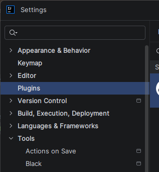
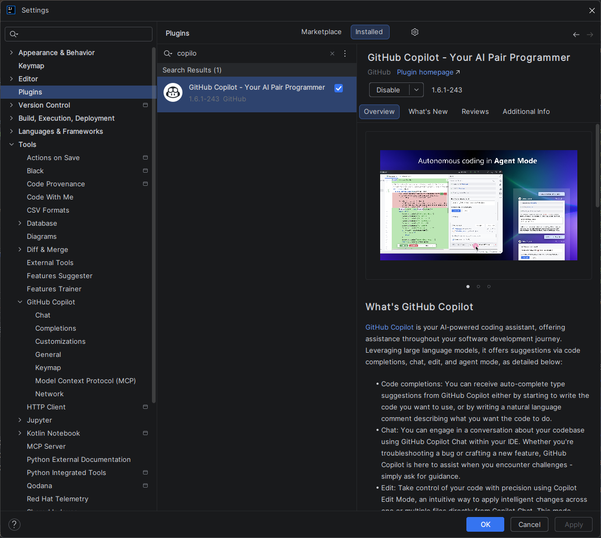
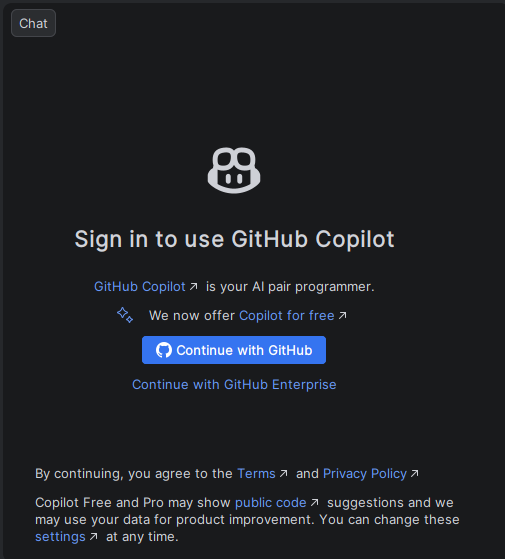
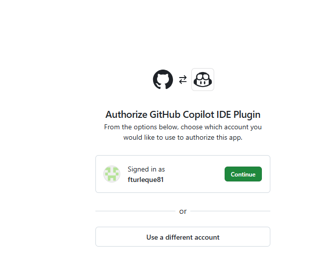
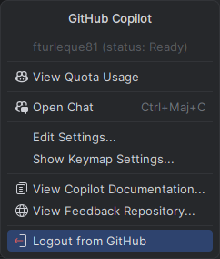
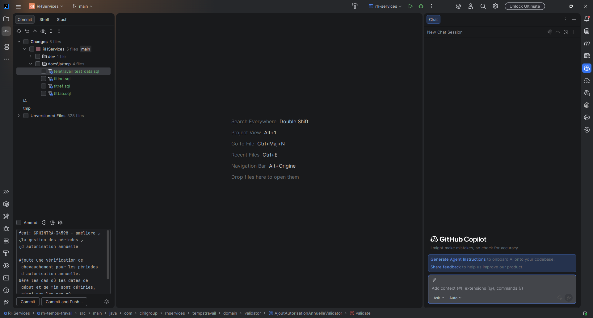

Tutoriel — Installer GitHub Copilot sur IntelliJ IDEA¶
IntelliJ IDEA Débutant
Présentation¶
Ce tutoriel vous guide pas à pas pour installer et configurer GitHub Copilot sur IntelliJ IDEA (et toute la suite JetBrains : PyCharm, WebStorm, GoLand, Rider, etc.). Durée estimée : 5 minutes.
GitHub Copilot sur IntelliJ IDEA permet de :
- Recevoir des suggestions de code en temps réel (inline)
- Utiliser Copilot Chat pour questions et refactorings
- Effectuer des modifications multi-fichiers automatisées (Agents)
- Intégration native avec l'analyse sémantique JetBrains (PSI)
Prérequis¶
Avant de commencer, vérifiez :
- [ ] IntelliJ IDEA 2024.1+ (ou PyCharm/WebStorm/GoLand équivalent) — vérifiable via Help → About
- [ ] Compte GitHub actif avec accès à Copilot (Free/Pro/Enterprise)
- [ ] Connexion internet (authentification OAuth)
- [ ] (Optionnel) JDK 21+ si vous développez en Java
Vérifiez votre version : Help → About (doit afficher "IntelliJ IDEA 2024.x" ou supérieur)
Version insuffisante ?
Le plugin Copilot nécessite IntelliJ 2024.1 minimum. Les versions anciennes (2023.x) ne supportent pas toutes les features modernes (Agents, Edits).
Mettez à jour via Help → Check for Updates ou jetbrains.com/idea
Étape 1 — Ouvrir le gestionnaire de plugins¶
Ouvrez IntelliJ IDEA et accédez au gestionnaire de plugins.
 Méthode 1 : Raccourci clavier¶
Méthode 1 : Raccourci clavier¶
- Windows/Linux : Ctrl+Alt+S (Settings) → Plugins
- macOS : Cmd+, (Preferences) → Plugins
Méthode 2 : Menu principal¶
- Cliquez File (Windows/Linux) ou le nom de l'app (macOS)
- Sélectionnez Settings (Windows/Linux) ou Preferences (macOS)
- Dans le volet gauche : Plugins

Méthode 3 : Recherche rapide¶
- Appuyez Shift + Shift pour ouvrir Search Everywhere
- Tapez :
"Plugins" - Appuyez Enter
Raccourci direct
Vous pouvez aussi accéder aux Plugins directement via la barre de recherche rapide (Search Everywhere) : appuyez sur Shift+Shift, puis tapez "Plugins".
Vous verrez :
Le gestionnaire de plugins avec onglets : Marketplace, Installed, Updates
Étape 2 — Installer GitHub Copilot¶
Étapes d'installation¶
- Assurez-vous d'être sur l'onglet Marketplace (pas "Installed")
- Tapez
GitHub Copilotdans la barre de recherche - Le premier résultat doit être publié par
GitHub(avec badge ✓) - Cliquez Install

Vérifiez l'éditeur du plugin
Assurez-vous que le plugin est bien publié par GitHub (vérifié avec badge ✓). Il existe des plugins tiers imitateurs — installez uniquement l'officiel (identifiant : com.github.copilot).
Après l'installation¶
Le gestionnaire affiche : Restart IDE (bouton bleu)
Étape 3 — Redémarrer IntelliJ¶
Cliquez Restart IDE. IntelliJ relance automatiquement.
Redémarrage obligatoire
IntelliJ doit redémarrer pour charger le plugin. Sauvegardez votre travail en cours avant de cliquer sur Restart IDE. Tous vos projets ouverts seront restaurés automatiquement.
Étape 4 — Authentification avec GitHub¶
Après redémarrage, authentifiez-vous avec votre compte GitHub.
Cas 1 : Notification automatique¶
- Une notification "GitHub Copilot" peut apparaître automatiquement en bas à droite → cliquez-la
Cas 2 : Authentification manuelle¶
- Menu : Tools → GitHub Copilot → Login to GitHub
- Ou recherche rapide (Shift+Shift) :
"Login to GitHub" - Une boîte de dialogue s'ouvre avec un code de vérification unique (ex:
AB12-CD34)

- Cliquez Copy and Open — le code est copié et votre navigateur s'ouvre automatiquement
- Sur la page GitHub qui s'ouvre, collez le code dans le champ prévu
Processus navigateur¶
- Connexion GitHub (si nécessaire)
- Collez le code de vérification dans le champ prévu
- Cliquez Continue, puis Authorize GitHub Copilot Plugin
- GitHub peut demander votre mot de passe ou une authentification 2FA
- Une fois autorisé, un message de confirmation s'affiche dans le navigateur
- Revenez dans IntelliJ — Copilot est maintenant authentifié

Le navigateur ne s'ouvre pas ?
Copiez manuellement l'URL affichée dans la boîte de dialogue et collez-la dans votre navigateur. Le code de vérification reste valide pendant 15 minutes.
Étape 5 — Vérifier que Copilot est actif¶
Vérification rapide¶
- Regardez la barre de statut en bas à droite d'IntelliJ
- Vous devez voir l'icône Copilot (éclair/logo)
- Vert ou sans point rouge = actif ✅ ou (status: Ready)

Test rapide¶
- Créez un nouveau fichier : File → New → Java Class (ou autre langage)
- Tapez
// TODO: fonction pour - Appuyez Enter et continuez
- Après 1-2 sec, une suggestion grise devrait apparaître
- Appuyez Tab pour accepter, Esc pour rejeter
Exemple Java :
Copilot suggère (en gris) :
public List<User> sortUsersByName(List<User> users) {
return users.stream()
.sorted(Comparator.comparing(User::getName))
.collect(Collectors.toList());
}
Tab = accepter la suggestion
Ça fonctionne !
Si vous voyez la suggestion grisée s'afficher dans l'éditeur, GitHub Copilot est correctement installé et opérationnel. Appuyez sur Tab pour accepter.
Bonus — Votre première interaction avec Copilot Chat¶
Testez le chat interactif dès maintenant.
Ouvrir Copilot Chat¶
- Windows/Linux : Ctrl+Shift+A
- macOS : Cmd+Shift+A
- Ou Tools → GitHub Copilot → Open Chat
Première question¶
- Le panneau Chat s'ouvre à droite

-
Tapez une question simple :
-
Copilot répond avec explication + exemples de code
Raccourcis Chat disponibles¶
- Ouvrir Chat : Ctrl+Shift+A (Windows/Linux) / Cmd+Shift+A (macOS)
- Inline Chat : Shift+Enter (dans éditeur)
- Slash commands :
/explain,/fix,/tests,/doc
Prochaines étapes¶
1. Découvrir les raccourcis (5 min)¶
→ Guide Référence — Raccourcis complets
Apprenez : - Accepter suggestions (Tab, navigation alternatives) - Déclencher Copilot manuellement (Ctrl+\) - Ouvrir Chat (Ctrl+Shift+A)
2. Personnaliser vos préférences (10 min)¶
Configurez : - Activation par langage - Mode manual vs auto - Raccourcis clavier personnalisés
3. Apprendre les best practices (15 min)¶
Maîtrisez : - Écrire des prompts efficaces - Valider le code généré - Quand utiliser Chat vs Agents
4. Explorer personnalisation & contexte (20+ min)¶
→ Contexte & Personnalisation IntelliJ
Avancé : - Custom instructions par projet - Multi-module Maven/Gradle setup - PSI integration (analyse sémantique profonde)
Foire aux questions¶
Q : Copilot ne suggère rien. Qu'est-ce qui ne va pas ?
A : Vérifiez : - [ ] Plugin GitHub Copilot installé (Settings → Plugins) - [ ] IntelliJ relancé après installation - [ ] Vous êtes authentifié (icône Copilot visible en bas) - [ ] Copilot activé pour ce langage (Settings → GitHub Copilot)
**Q : Je vois une erreur d'authentification .
A : 1. Menu : Tools → GitHub Copilot → Logout 2. Attendez 10 secondes 3. Tools → GitHub Copilot → Login to GitHub 4. Reconnectez-vous
Q : Copilot suggère du code de mauvaise qualité.
A : C'est normal — vous êtes responsable de vérifier. Lisez la section Best Practices pour apprendre à valider.
Pièges à éviter¶
Pièges courants lors de l'installation
1. Version IntelliJ trop ancienne Le plugin ne sera pas visible dans le Marketplace ou refusera de s'installer. ✅ Solution : mettez à jour IntelliJ via Help → Check for Updates
2. Plugin installé mais pas de suggestions Il peut s'agir d'un problème d'authentification non complété. ✅ Solution : Tools → GitHub Copilot → Login to GitHub et recommencez
3. Suggestions uniquement en anglais C'est le comportement par défaut. Copilot génère du code (qui est en anglais), mais vous pouvez interagir avec Chat en français. ✅ Voir Paramétrage pour la configuration de langue
4. Icône Copilot absente dans la barre d'état Copilot est peut-être désactivé pour le projet ouvert. ✅ Cliquez sur Tools → GitHub Copilot → Enable Completions
5. Conflit avec un autre plugin d'autocomplétion Certains plugins comme Tabnine peuvent créer des conflits. ✅ Désactivez temporairement les autres plugins d'IA pour tester
Prochaines étapes¶
- Guide de référence IntelliJ — Raccourcis, localisation des settings, plugins complémentaires
- Paramétrage IntelliJ — Configurer Copilot pour votre workflow
- Comparaison IntelliJ vs VS Code — Différences d'installation et de fonctionnement